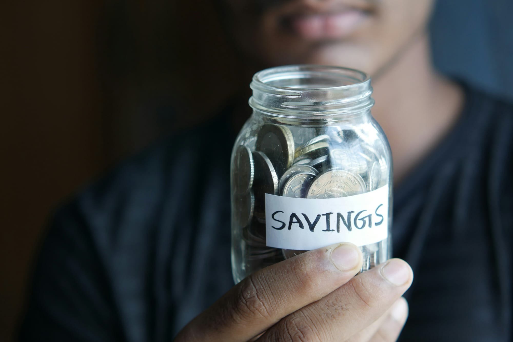

How to Save $10,000 in One Year (Step by Step)
Learn exactly how to save $10,000 in one year with a realistic step-by-step plan. Whether you earn $40K or $100K, this guide shows you how.
Z Zar · 22 Apr 2026 · 4 min read

Part of our Budget & Debt Guide
Saving $10,000 in a year sounds ambitious. It works out to $833/month or $192/week. For many people that feels impossible, until they actually look at where their money goes.
The math is more achievable than most people think. Here is exactly how to do it.
Step 1: Determine Your Starting Point
Before saving $10,000, you need to know your current numbers.
Calculate your monthly after-tax income. Then track every expense for 30 days using a free app like Rocket Money or Copilot. Do not estimate: track exactly.
At the end of 30 days you will know:
- Your actual monthly income
- Your actual monthly expenses
- The gap between them
That gap is your current savings rate. If you spend everything you earn, the gap is zero and you need to either increase income, decrease expenses, or both.
Step 2: Open a Dedicated High-Yield Savings Account
Never mix your $10,000 goal with your regular savings. Open a separate high-yield savings account specifically for this goal.
Name it "$10K Goal" or "Future Fund", something that reminds you what it is for every time you see it. The psychological barrier of a named account reduces the temptation to raid it.
Step 3: Set Up the Automatic Transfer First
The single most important action: set up an automatic transfer from your checking account to your new savings account the day after your paycheck arrives.
Calculate your required monthly savings:
- $10,000 ÷ 12 months = $834/month
Set the automatic transfer for $834. This makes saving the default behavior instead of spending.
If $834/month feels impossible with your current expenses, do not reduce the goal: find the money. Step 4 shows you how.
Step 4: Find the $834 Per Month
This is where most guides are vague. Here is the specific math broken down into achievable sources.
Source 1: Cancel Subscriptions ($50-150/month)
Use Rocket Money to scan your accounts for subscriptions. The average person finds $100-150/month in unused or forgotten subscriptions within the first scan.
The Books That Make $10,000 Feel Achievable
I Will Teach You to Be Rich
by Ramit Sethi
Sethi's automation system makes saving $833/month feel effortless by removing every decision point and every temptation to spend.
Source 2: Reduce Dining Out ($100-200/month)
The average American spends $250-350/month at restaurants and food delivery. Cutting this in half by cooking more often saves $125-175/month.
Meal planning with an app like Mealime takes 15 minutes per week and eliminates the "I don't know what to cook" excuse that drives food delivery spending.
Contribution to goal: $150/month
Source 3: Negotiate Your Bills ($50-100/month)
Call your internet provider and ask for a loyalty discount. Switch to a cheaper phone plan. Compare car insurance quotes annually. These three actions alone typically save $50-100/month.
Contribution to goal: $75/month
Source 4: Reduce Entertainment and Shopping ($100-200/month)
Track exactly what you spend on entertainment, clothing, hobbies, and impulse purchases. Set a firm monthly budget for these categories: not elimination, just reduction.
Contribution to goal: $150/month
Source 5: Add One Income Source ($200-500/month)
This is the accelerator. Any additional income goes directly to the goal.
Options that work in 2026:
- Freelance one skill for 5 hours per week: $200-500/month
- Sell unused items on Facebook Marketplace or eBay: $100-300/month
- One extra delivery shift per week: $100-200/month
- Sell one digital product or template: $50-500/month
Contribution to goal: $250/month
Total Monthly Savings Found: $725/month
Combined with whatever you were already saving, reaching $834/month becomes realistic for most people.
Step 5: Protect the Goal From Yourself
The biggest threat to your $10,000 goal is you, specifically, the version of you that wants to dip into it for non-emergencies.
Rules that protect the goal:
Define what counts as an emergency before you need it. Car repair needed for work: yes. A sale you do not want to miss: no. Concert tickets: no. Medical bill: yes.
Keep the savings account at a different bank than your checking account. The 1-3 day transfer delay creates a friction that eliminates impulse withdrawals.
Tell someone your goal. Accountability dramatically increases follow-through. A partner, friend, or even a public commitment changes behavior.
The Month-by-Month Milestone Plan
| Month | Cumulative Saved | Milestone |
|---|---|---|
| 1 | $834 | First month complete |
| 3 | $2,500 | Emergency fund starter |
| 6 | $5,000 | Halfway point |
| 9 | $7,500 | Three quarters done |
| 12 | $10,000 | Goal achieved |
Celebrate each milestone. Not with spending, with acknowledgment of what you have accomplished.
What to Do With the $10,000 When You Reach It
The destination depends on your financial situation:
If you have no emergency fund: Keep $5,000-6,000 as your emergency fund in the HYSA. Invest the remaining $4,000-5,000 in a Roth IRA.
If you already have an emergency fund: Invest the full $10,000 in your Roth IRA or brokerage account immediately.
If you have high-interest debt: Use $7,000-8,000 to pay down the highest-rate debt. Keep $2,000-3,000 as a starter emergency fund.
Bonus: Earn Cashback on Everything You Already Buy
One of the fastest wins for hitting a savings goal is activating cashback on purchases you are already making. Apps like Rakuten (1–15% back at 3,500+ stores) and Ibotta ($20–50/month on groceries) require zero behavior change: you just shop through them. Used consistently, cashback apps generate $600–$1,800/year with 20 minutes of setup. See the full breakdown: best cashback apps in 2026.
The Bottom Line
Saving $10,000 in one year is not about extreme sacrifice. It is about being intentional: knowing where your money goes, reducing waste, and adding income where possible.
Start today: open the HYSA, set up the automatic transfer, and install Rocket Money to find the subscriptions you have been paying for without knowing.
The $10,000 is already in your budget. You just need to redirect it.
Want to go deeper on this? See How to Invest in Cryptocurrency Safely in 2026.
For the full breakdown, read How to Invest in Gold in 2026.
Free download: The 10-Step Financial Independence Checklist
The exact roadmap I followed to build my financial foundation. 6 pages, professionally designed, free, no email required.